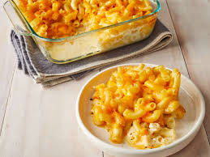

Baked Macaroni and Cheese

Macaroni and cheese baked to perfection
This is a Mac and Cheese recipe that is everything you want in a knock-your-socks off Macaroni Cheese - Cheesy and creamy, with prefectly cooked macaroni, plenty of sauce and a crunchy buttery top.
Ingredients
- Elbow Macaroni
- Unsalted Butter
- Panko breadcrumbs
- Salt
- Flour
- Milk
- Freshly Shredded Cheese
Steps
- Cook Pasta
- Toss in butter
- Mix together
- Preheat oven to 180 C
- Make roux
- Add milk
- Add seasonings
- Thicken sauce
- Add cheese
- Check salt
- Assemble
- Bake for 25 minutes
- Serve